Home
Product
Category
Plane Fertilizer
PGN
About
Contact
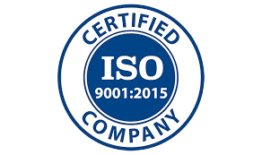
Your Growth, Our Passion!
दर्जा हीच आमची ओळख...
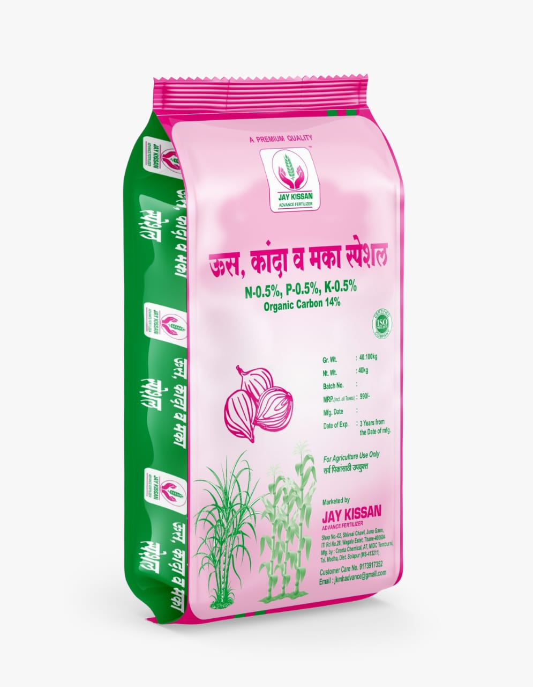
जय किसान अॅडव्हान्स ऊस, कांदा, मका स्पेशल
ऊस, कांदा आणि मका पिकांसाठी विशेष सेंद्रिय खत
फायदे
दाणेदार स्वरूपात असून, पूर्णपणे सेंद्रिय आहे.
मुळांची संख्या वाढवून खताचा शोषण वाढवते.
ऊस:
दोन पेऱ्यातील अंतर वाढवते आणि फुटव्यांची संख्या वाढवते.
कांदा:
पात्यांची वाढ उत्तम करते आणि मुळीचा आकार वाढवते.
मका:
दोन पेऱ्यातील अंतर वाढवते, मुळांचा विकास वाढवते आणि हिरवळ व उंची वाढवते.
पिकांची वाढ उत्तम करते आणि उत्पादन वाढवते.
जमिनीचे आरोग्य सुधारते.
प्रमाण
१०० किलो प्रती एकर
उपलब्ध पॅकिंग
५० किलो
Back
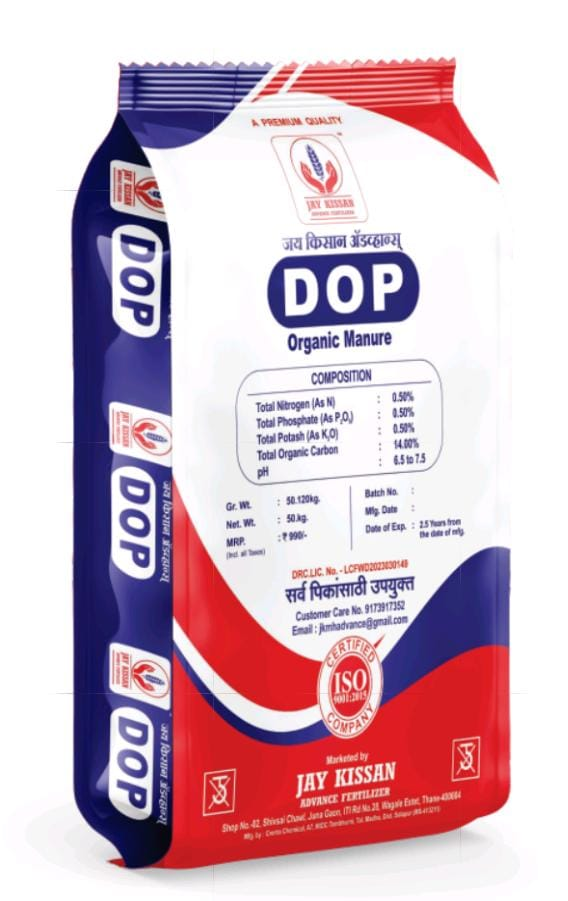
जय किसान अॅडव्हान्स DOP
Organic Manure
फायदे
जय किसान अॅडव्हान्स डी ओ पी हे खत दाणेदार स्वरुपात असून पूर्णपणे सेंद्रिय आहे.
या खताच्या वापरामुळे जीवाणूंची संख्या वाढण्यास मदत होते तसेच जमिनीचा पोत सुधारण्यास मदत होते.
या खतामध्ये नत्र ०.५०%, फोस्फरस ०.५०%, पोटॅश ०.५०% आहे.
ऑरगॅनिक कार्बन कमीत कमी १४% असतो.
या खतामुळे जमिनीची उत्पादन क्षमता वाढते.
प्रमाण
१०० किलो प्रती एकर
उपलब्ध पॅकिंग
५० किलो
Back
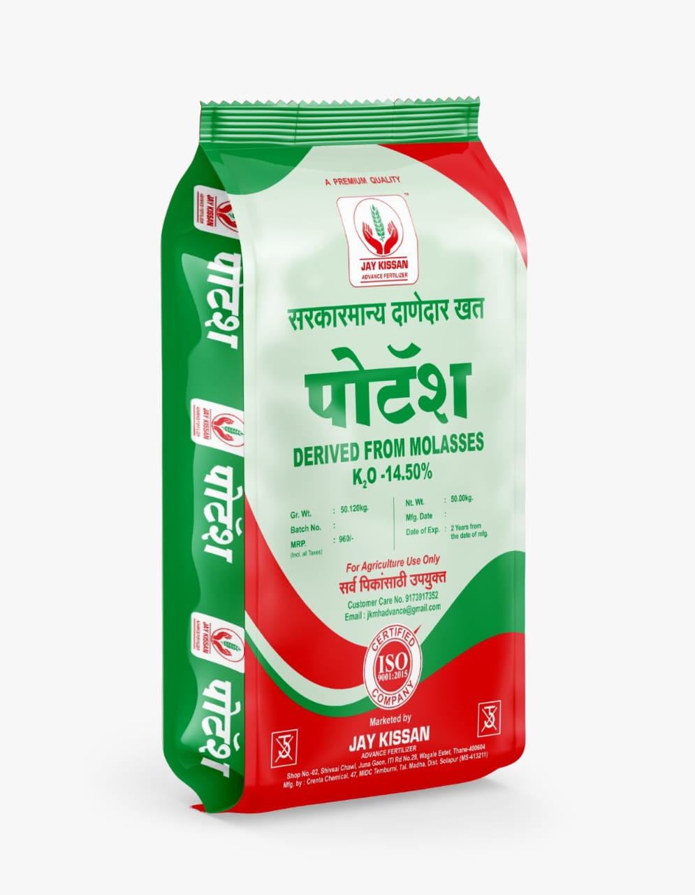
PDM पोटॅश
सरकारमान्य दाणेदार खत
फायदे
हे खत दाणेदार स्वरुपात असून, सरकारमान्य आहे.
पोटॅशच्या १४.५०% उच्च प्रमाणामुळे पिकांचा आकार, वजन आणि गुणवत्ता वाढते.
पिकांच्या संपूर्ण वाढीच्या टप्प्यात आवश्यक पोषण पुरवते.
जमिनीची सुधारण्यात मदत करते.
प्रमाण
बारमाही पिके: १०० किलो प्रती एकर इतर पिके: ५० किलो प्रती एकर
उपलब्ध पॅकिंग
५० किलो
Back
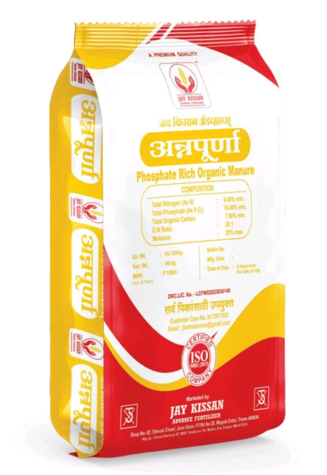
जय किसान अॅडव्हान्स अन्नपूर्णा
फोस्फेट रिच ऑरगॅनिक खत
फायदे
दाणेदार स्वरूपात असून, फॉस्फरसयुक्त सेंद्रिय खत आहे.
जमिनीतील फॉस्फरसची कमतरता पूर्णपणे भरून काढते.
१०.४०% फॉस्फरस पेंटॉक्साईड (P₂O₅) आणि ०.४०% नायट्रोजन असून, कर्ब-नत्र गुणोत्तर ७.९ आहे.
मका, उस, ज्वारी, गहू, बाजरी, केळी, घास इ. सर्व पिकांसाठी उपयुक्त.
जमिनीचे आरोग्य सुधारते आणि पिकांची वाढ उत्तम करते.
विपरीत परिणाम होत नाही.
प्रमाण
१०० किलो प्रती एकर
उपलब्ध पॅकिंग
५० किलो
Back
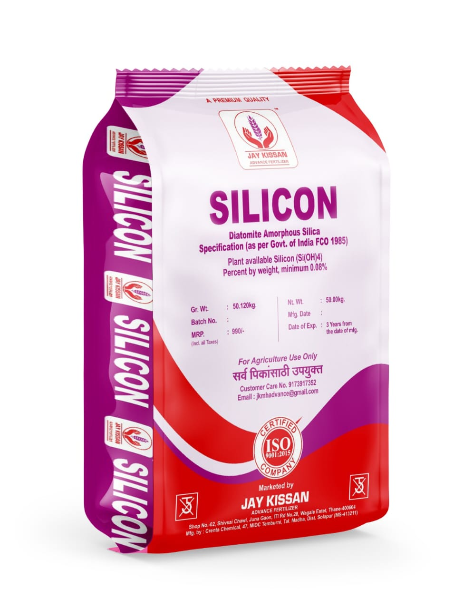
जय किसान अॅडव्हान्स सुपर सिलिकॉन
Diatomite Amorphous Silica
फायदे
महाराष्ट्र शासन मान्यता प्राप्त उत्पादन.
सिलिकॉनमुळे प्रकाश संश्लेषण वाढून पिकांचा अन्नसाठा वाढतो.
पिकांवर फवारलेल्या रसायनांचा शोषण कमी करून पिकांचे संरक्षण करते.
इतर खतांचा प्रभाव वाढवून पिकांची वाढ उत्तम करते.
बुरशी आणि जीवाणूजन्य रोगांचा प्रादुर्भाव कमी करते.
पिकांची गुणवत्ता आणि उत्पादन क्षमता वाढवते.
प्रमाण
बारमाही पिके: १०० किलो प्रती एकर इतर पिके: ५० किलो प्रती एकर
उपलब्ध पॅकिंग
५० किलो
Back
कॅल्शियम सल्फेट (फॉस्फो जिप्सम)
जमिनीची सुधारणा आणि पिकांचे उत्पादन वाढवणारे खत
फायदे
जमिनीचा सामू कमी करून अन्नद्रव्यांची उपलब्धता वाढवते.
जमिनीचा पोत सुधारून पाणी धरणे क्षमता वाढवते.
तेलवर्गीय पिके आणि कॅल्शियम भरपूर लागणारी पिके यांचे उत्पादन वाढवते.
जमिनीची पीएच पातळी संतुलित करते.
कॅल्शियम आणि सल्फरची कमतरता दूर करते.
रचना
कॅल्शियम: ७०%
सल्फर: १३%
प्रमाण
चागली जमीन: ३-४ बॅग प्रती एकर चोपण जमीन: ६-७ बॅग प्रती एकर
उपलब्ध पॅकिंग
५० किलो
Back
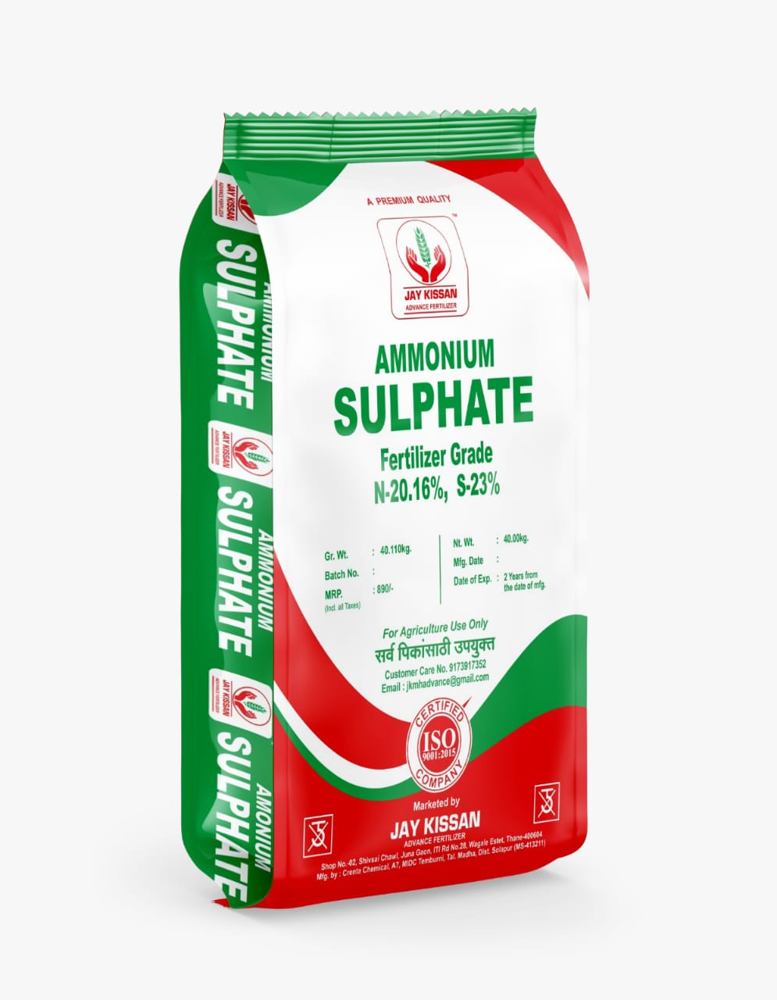
अमोनिअम सल्फेट
नायट्रोजन आणि सल्फरयुक्त खत
फायदे
नायट्रोजन (२०.५%) आणि सल्फर (२३%) यांचे उत्तम प्रमाण.
अल्कधर्मी जमिनीचा सामू कमी करून जमिनीचे पीएच संतुलित करते.
पानातील हरितद्रव्य वाढवून प्रकाशसंश्लेषण क्रिया वाढवते.
पिकांची वाढ उत्तम करते आणि उत्पादन वाढवते.
प्रथिन, तेल आणि साखर यांचे उत्पादन वाढवते.
प्रमाण
८० ते १०० किलो प्रती एकर
उपलब्ध पॅकिंग
४० किलो
Back
प्लॅन्टो डबल पॉवर
उत्कृष्ट जैविक अर्क सेंद्रिय उत्पाद
फायदे
आधुनिक तंत्रज्ञानाने तयार केलेले दाणेदार उत्पादन.
बायोप्लॅन्टोझाईम आणि बायोनिम अर्कयुक्त.
वनस्पतीची वाढ, शाखीय विस्तार, फुले आणि फळे यांचा सर्वांगीण विकास.
नैसर्गिक पद्धतीने पिकांची उत्पादकता वाढवते.
वनस्पतीचा अतिजलद विकास करण्यास मदत करते.
जमिनीचे आरोग्य सुधारते.
प्रमाण
२५ किलो प्रती एकर
उपलब्ध पैकिंग
२५ किलो
Back
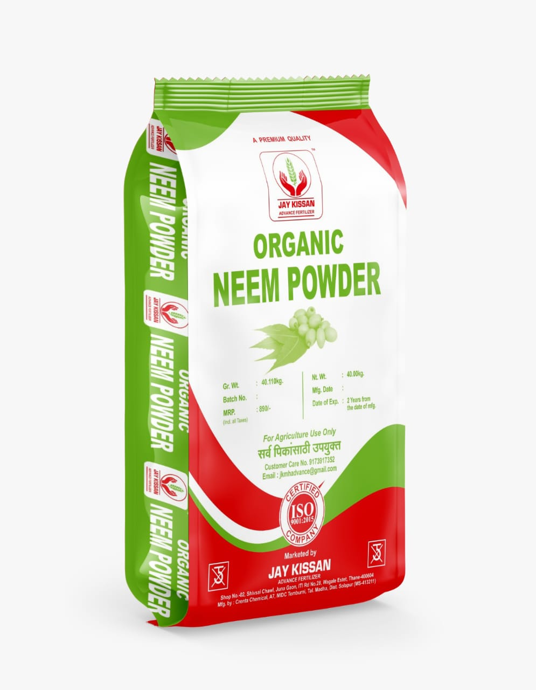
निम पावडर
शुद्ध आणि गुणवत्तापूर्ण सेंद्रिय उत्पाद
फायदे
शुद्ध निंबोळीच्या बीजापासून बनवलेली पावडर.
जमिनीतील हानिकारक बुरशी आणि किटकांना नियंत्रित करते.
जमिनीचे आरोग्य सुधारून जमिनीला भुसभुशीत बनवते.
नैसर्गिक पद्धतीने नत्र, स्फुरद आणि पालाश पुरवते.
पिकांची वाढ उत्तम करते आणि उत्पादन वाढवते.
पर्यावरणास अनुकूल आणि सुरक्षित.
प्रमाण
१०० किलो प्रती एकर
उपलब्ध पॅकिंग
४० किलो
Back
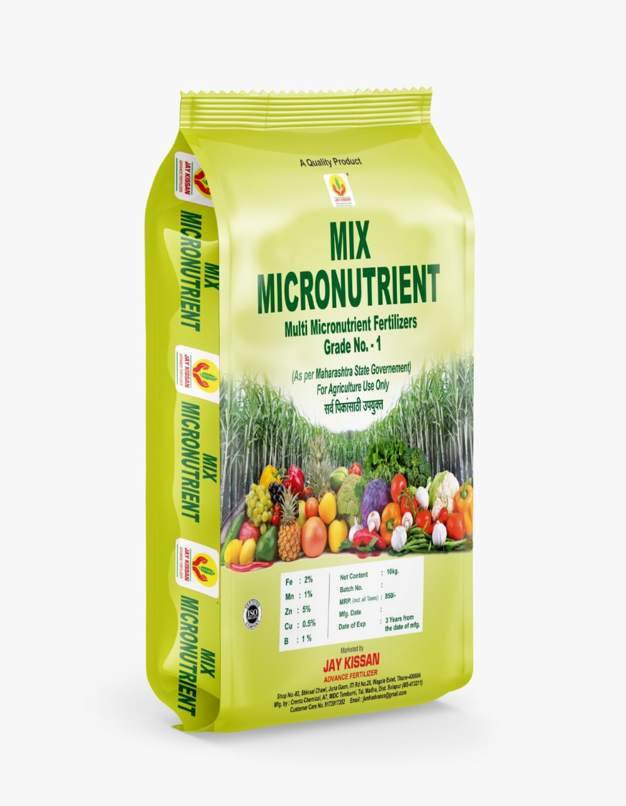
मिक्स मायक्रोन्युट्रियंट खत
महाराष्ट्र शासन प्रमाणित सूक्ष्म पोषक तत्वांचे मिश्रण
फायदे
झिंक (५%), फेरस (२%), मैंगनीज (१%), बोरॉन (१%), कॉपर (०.५%) ही आवश्यक सूक्ष्म पोषक तत्वे समाविष्ट आहेत.
पिकांना सर्व आवश्यक सूक्ष्म पोषक तत्वे एकाच ठिकाणी उपलब्ध करून देते.
पिकांची वाढ उत्तम करते आणि उत्पादन वाढवते.
पिकांची गुणवत्ता सुधारते.
रोगप्रतिकारक शक्ती वाढवते.
रचना
झिंक: ५%
फेरस: २%
मैंगनीज: १%
बोरॉन: १%
कॉपर: ०.५%
प्रमाण
भाजीपाला: १० किलो प्रती एकर
फळझाडे: २० किलो प्रती हेक्टर
उपलब्ध पॅकिंग
१० किलो
Back
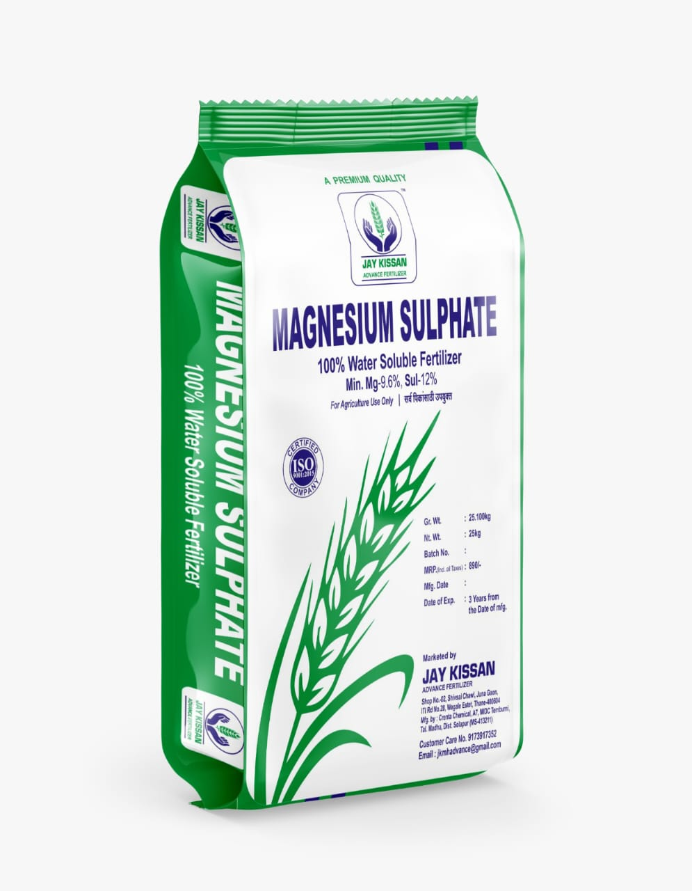
मॅग्नेशियम सल्फेट
मॅग्नेशियम आणि सल्फरयुक्त खत
फायदे
क्रिस्टल स्वरूपात असून, शुद्ध आणि गुणवत्तापूर्ण आहे.
मॅग्नेशियम (९.६%) आणि सल्फर (१२%) यांचे उत्तम प्रमाण.
पिकांमधील क्लोरोफिलची मात्रा वाढवून प्रकाशसंश्लेषण क्रिया वाढवते.
पिकांची मॅग्नेशियम आणि सल्फरची कमतरता दूर करते.
पिकांची वाढ उत्तम करते आणि उत्पादन वाढवते.
पिकांची गुणवत्ता सुधारते.
रचना
मॅग्नेशियम: ९.६%
सल्फर: १२%
प्रमाण
२५ किलो प्रती एकर
उपलब्ध पॅकिंग
२५ किलो
Back
फेरस सल्फेट
हरितद्रव्य निर्मितीसाठी आवश्यक खत
फायदे
फेरस (१९%) आणि सल्फर (१०.५%) यांचे उत्तम प्रमाण.
पानांमधील हरितद्रव्य निर्मितीसाठी आवश्यक.
पानांवरील पांढरे डाग किंवा चट्टे दूर करण्यास मदत करते.
शेंड्याकडील पानांच्या शिरांमधील पिवळेपणा दूर करून झाडाची वाढ उत्तम करते.
आले, ऊस, कारले आणि इतर पिकांमध्ये फेरसची कमतरता दूर करते.
पिकांची वाढ उत्तम करते आणि उत्पादन वाढवते.
रचना
फेरस: १९%
सल्फर: १०.५%
प्रमाण
१० किलो प्रती एकर
उपलब्ध पॅकिंग
१० किलो
Back
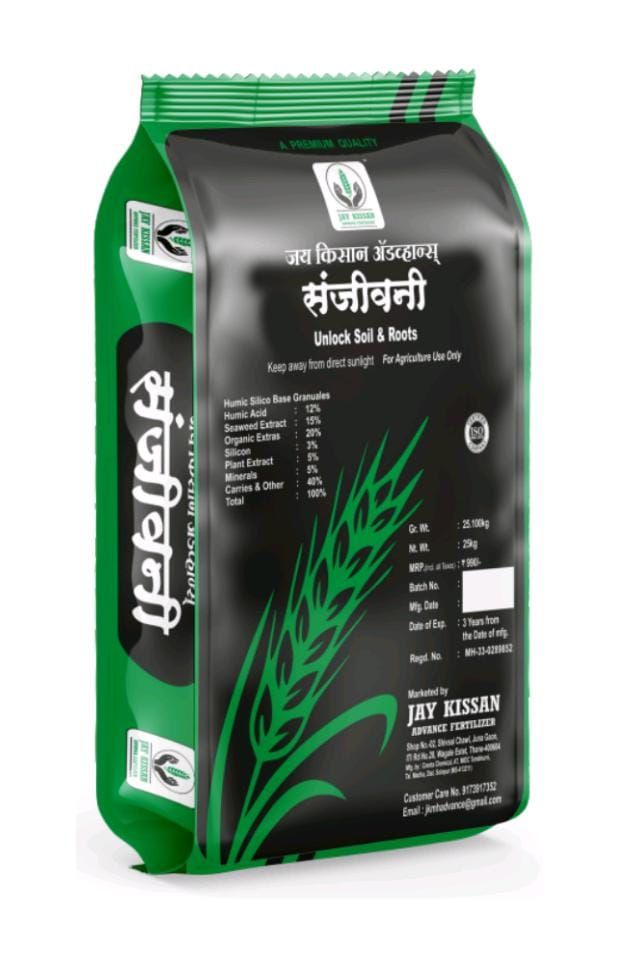
जय किसान अॅडव्हान्स संजीवनी
वनस्पतींच्या वाढीसाठी उत्तम सेंद्रिय खत
फायदे
दाणेदार स्वरूपातील आधुनिक उत्पादन.
वनस्पतींच्या मुळांची वाढ वेगाने होते.
अन्नग्रहण क्षमता वाढवून वनस्पतीची वाढ उत्तम करते.
हुमिक अॅसिड, फुलविक अॅसिड, समुद्री वनस्पती आणि सिलिकॉन यांचे समृद्ध मिश्रण.
पानातील हरितद्रव्य वाढवून प्रकाशसंश्लेषण क्रिया सुधारते.
पिकांची रोगप्रतिकारक शक्ती वाढवते.
जमिनीची सुधारते आणि उत्पादकता वाढवते.
रचना
हुमिक अॅसिड, फुलविक अॅसिड, समुद्री वनस्पती, सिलिकॉन इ.
प्रमाण
२५ किलो प्रती हेक्टर
उपलब्ध पॅकिंग
२५ किलो
Back
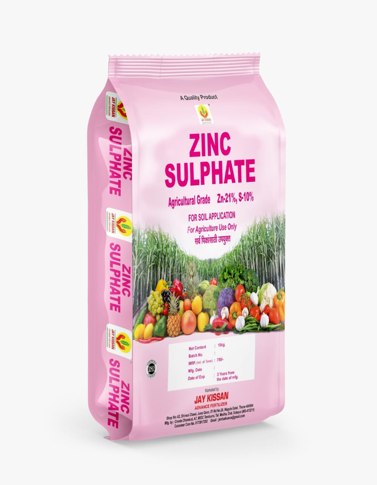
झिंक सल्फेट
सूक्ष्म पोषक तत्वांचे खत
फायदे
झिंक (21%) आणि सल्फर (10%) या आवश्यक सूक्ष्म पोषक तत्वांचे उत्तम स्रोत.
परागकण विकासासाठी आवश्यक, फुले येण्याला चालना देते.
पिकांची वाढ उत्तम करते आणि पान पिवळे पडणे रोखते.
पिकांची गुणवत्ता सुधारते आणि उत्पादन वाढवते.
मका, तांदूळ, कापूस, गहू आणि पालेभाज्यांसाठी उपयुक्त.
रचना
झिंक: 21%
सल्फर: 10%
प्रमाण
१० किलो प्रती हेक्टर
उपलब्ध पॅकिंग
९० किलो
Back
जे.के. अल्ट्रा पॉवर
कॅल्शीयम नायट्रेट खत
फायदे
१००% पाण्यात विद्राव्य.
कॅल्शीयम (१८.८%) आणि नायट्रोजन (१५.५%) यांचे उत्तम प्रमाण.
पिकांची वाढ उत्तम करते.
फर्टिगेशनसाठी आदर्श.
वापर
द्राक्ष, डाळिंब, केळी, कापूस इ.
प्रमाण
१० ते १५ किलो प्रती हेक्टर
उपलब्ध पॅकिंग
१० किलो
Back
जय किसान अॅडव्हान्स पॉवर
पिकांची वाढ व उत्पादकता वाढवणारे खत
फायदे
मुळांची वाढ उत्तम करते.
पानांचा विकास वाढवते.
उत्पादन वाढवते.
रोग प्रतिकारक शक्ती वाढवते.
फळांची गुणवत्ता सुधारते.
प्रमाण
१० किलो प्रती हेक्टर
उपलब्ध पॅकिंग
१० किलो
Back
जय किसान अॅडव्हान्स किंग मेकर
वनस्पती विकास उत्तेजक
फायदे
कळी, फुले, फळांचे प्रमाण वाढवते.
फुलगळ रोखते.
मुळांची वाढ उत्तम करते.
उत्पादन वाढवते.
विविध पिकांसाठी उपयुक्त.
सक्रिय घटक
ओईल ऑफ मिरबेन
वापर
ड्रिप किंवा पाण्यात मिसळून
उपलब्ध पॅकिंग
२५० मिली., ५०० मिली., १ लिटर
Back
जय किसान अॅडव्हान्स मॅजिक गोल्ड ७०
उच्च दर्जाचे सेंद्रिय खत
फायदे
जमिनीची सुपिकता वाढवते.
जिवाणूंची वाढ उत्तेजित करते.
फुलकळीसाठी मदत करते.
रोग प्रतिकारक शक्ती वाढवते.
उत्पादन वाढवते.
मुख्य घटक
उच्च दर्जाचे ऑर्गॅनिक कार्बन
प्रमाण
५ लिटर प्रती हेक्टर
उपलब्ध पॅकिंग
५ लिटर
Back
जय किसान अॅडव्हान्स किंग मेकर
सर्वोत्तम वनस्पती विकास उत्तेजक
फायदे
सर्व आवश्यक पोषक घटक उपलब्ध.
फुले आणि फळांचे प्रमाण वाढवते.
ऊसासारख्या पिकांमध्ये फुटवा वाढवते.
मुळांची वाढ उत्तम करते.
पिकांची सर्वांगीण वाढ होते.
मुख्य घटक
ओईल ऑफ मिरबेन, प्रोटीन, कार्बोझीलीक अॅसिड, अमिनो अॅसिड, फुलविक अॅसिड, सिविड एक्स्ट्रॅक्ट, ह्यूमिक सिड, व्हिटॅमिन, अधीटोडा वासिका, एनरीच्ड कार्बन
वापर
ड्रिप किंवा पाण्यात मिसळून
प्रमाण
पाण्यात: २ ते २.५ मिली/लिटर
ड्रिप: १ ते २ लिटर
उपलब्ध पॅकिंग
२५० मिली, ५०० मिली, १ लिटर
Back
जय किसान अॅडव्हान्स कॉपगार्ड
वनस्पती संरक्षण आणि वाढ उत्तेजक
फायदे
ट्रेस कमी करणे
वाढ प्रोत्साहन
प्रतिकारशक्ती वाढ
पानांची वाढ
कीटक प्रतिरोधकता
तननाशकांसह सुसंगत
मुख्य घटक
सिलिकॉन, नायट्रो रिजंट, झिंक, नैसर्गिक वनस्पती अर्क
वापर
१.५ ते २ मिली प्रती लिटर पाणी
उपलब्ध पॅकिंग
१०० मिली, २५० मिली, ५०0 मिली
Back
जय किसान एडव्हान्स क्रॉप-एन स्टिक
उच्च दर्जाचे स्टिकर, स्प्रेडर, पेनेट्रेटर
फायदे
औषध पसरवणे
औषधाची कार्यक्षमता वाढवणे
सिलिकॉनचे फायदे
खर्च कमी
मुख्य घटक
सिलिकॉन
वापर
०.३ ते ०.५ मिली प्रती लिटर पाणी
उपलब्ध पॅकिंग
५० मिली, १०० मिली
Back
जय किसान एडव्हान्स झाइम कॉप पॉवर
उच्च दर्जाचे वनस्पती विकास उत्तेजक
फायदे
उच्च दर्जाचे सीविड
त्वरित हिरवेपणा
सर्वांगीण वाढ
फळे आणि फुले
मुळांची वाढ
मुख्य घटक
उच्च दर्जाचे सीविड
वापर
पाण्यात: २ मिली/लिटर
ड्रिप: एकरी १ ते २ लिटर
उपलब्ध पॅकिंग
१०० मिली, २५० मिली, ५०० मिली, १ लिटर
Back
जय किसान एडव्हान्स मायकोमिक्स DF
संतुलित सूक्ष्म पोषक तत्वांचे मिश्रण
फायदे
सूक्ष्म अन्नद्रव्ये पुरवते
पोषण सुधारते
सर्व पिकांसाठी उपयुक्त
मुख्य घटक
झिंक, फेरस, मंगनीज, कॉपर, बोरॉन
वापर
२ ते ३ लिटर प्रति एकर
उपलब्ध पॅकिंग
५ लिटर
Back
जय किसान एडव्हान्स किंग मेकर (ड्रीप)
सर्वोत्तम वनस्पती विकास उत्तेजक (ड्रिप पद्धतीसाठी)
फायदे
सर्व आवश्यक पोषक घटक उपलब्ध.
फुले आणि फळांचे प्रमाण वाढवते.
ऊसासारख्या पिकांमध्ये फुटवा वाढवते.
मुळांची वाढ उत्तम करते.
पिकांची सर्वांगीण वाढ होते.
मुख्य घटक
ओईल ऑफ मिरबेन, प्रोटीन, काबीक्झीलीक अॅसिड, अमिनो अॅसिड, फुलविक अॅसिड, सिविड एक्स्ट्रॅक्ट, ह्यूमिक अॅसिड, व्हिटॅमिन, अधीटोडा वासिका, एनरीच्ड कार्बन
वापर
ड्रिप सिंचन पद्धती
उपलब्ध पॅकिंग
५ लिटर
Back